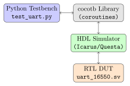
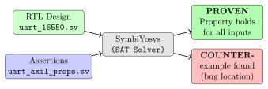

Chapter 7: Verification¶
The Golden Rule of Chip Design
“A chip bug found in simulation costs one hour to fix. The same bug found after tapeout costs three months and millions of dollars to re-spin.”
Verification is not optional. In the semiconductor industry, 60–80% of engineering effort goes into verification, not design. This chapter shows you the three major verification techniques used in this project.
7.1 Three Verification Approaches¶
| Method | Tool | What It Proves |
|---|---|---|
| Simulation (directed) | Icarus, Questa, Verilator | RTL matches testbench expectations |
| Simulation (random/UVM) | Questa + UVM | Broad coverage of corner cases |
| Formal verification | SymbiYosys | Mathematical proof for all inputs |
7.2 Simulation — Running Your RTL Like a Program¶
A simulator executes your HDL code, propagating signal changes through time according to the clock. You write a testbench that provides stimulus (inputs) and checks responses (outputs).
7.2.1 Quick Simulation with Icarus Verilog¶
Icarus Verilog (iverilog) is free, fast to compile, and supports SystemVerilog. It is the go-to tool for quick functional checks:
# Method 1: Use the convenience script
bash scripts/bash/sim_run.sh \
rtl-templates/peripherals/uart_16550.sv \
verification/tb-templates/uart_16550_tb.sv \
tb icarus
# Method 2: Manual compile and run
iverilog -g2012 \
-o sim_output/sim_uart \
rtl-templates/peripherals/uart_16550.sv \
verification/tb-templates/uart_16550_tb.sv
./sim_output/sim_uart
# View waveform
gtkwave sim_output/dump.vcd
7.2.2 Anatomy of the UART Testbench¶
The file verification/tb-templates/uart_16550_tb.sv exercises the UART. Let’s look at the key patterns:
module uart_16550_tb;
// 1. Declare signals to drive the DUT
logic clk, rst_n;
logic [3:0] s_axi_awaddr;
logic [31:0] s_axi_wdata;
// ... (all AXI signals)
// 2. Loopback TX->RX for self-test
assign uart_rxd = uart_txd;
// 3. Instantiate the Device Under Test (DUT)
uart_16550 #(
.CLOCK_FREQ_HZ(100_000_000)
) dut (
.clk(clk), .rst_n(rst_n),
.uart_txd(uart_txd), .uart_rxd(uart_rxd)
// ... connect all ports
);
// 4. Generate clock: toggle every 5 ns = 100 MHz
initial clk = 0;
always #5 clk = ~clk;
// 5. Reusable tasks (AXI register read/write)
task axil_write(input [3:0] addr, input [31:0] data);
// ... (drives AXI signals, shown in Chapter 5)
endtask
// 6. Main test sequence
initial begin
rst_n = 0;
repeat(5) @(posedge clk);
rst_n = 1;
// Test: TX loopback --- send 'A', expect to receive 'A'
axil_write(MCR, 32'h10); // Enable loopback
axil_write(RBR, 32'h41); // Send 'A' (0x41)
repeat(2000) @(posedge clk); // Wait for serial TX
axil_read(LSR, rd_data);
check("RX data ready", rd_data[0] == 1'b1);
axil_read(RBR, rd_data);
check("Got 'A'", rd_data[7:0] == 8'h41);
$display("RESULT:
$finish;
end
// 7. Simulation timeout guard
initial begin
#5_000_000; $display("TIMEOUT"); $finish;
end
endmodule
7.2.3 Verilator — Fast C++ Simulation¶
For large designs, Icarus is too slow. Verilator compiles SystemVerilog into C++ and then compiles that with GCC, producing simulations that run 10–100\(\times\) faster. It also performs the most thorough lint checking of any open-source tool.
# Lint only (very fast, catches many errors)
verilator --lint-only -Wall \
rtl-templates/peripherals/uart_16550.sv
# Build a simulation binary
verilator --binary --trace -Wall \
--top-module uart_16550 \
rtl-templates/peripherals/uart_16550.sv \
eda/verilator/sim_top.cpp \
-o sim_output/Vuart_16550
# Run and view waveform
./sim_output/Vuart_16550 --trace
gtkwave sim_trace.vcd
7.3 cocotb — Python-Driven Verification¶
cocotb allows you to write testbenches in Python instead of SystemVerilog. This is ideal when you have existing Python test vectors, when the test logic is complex (file I/O, mathematical comparison), or when you prefer Python’s rich library ecosystem.
7.3.1 How cocotb Works¶

7.3.2 cocotb UART Test¶
The complete test is at verification/cocotb/uart_test/test_uart_16550.py:
import cocotb
from cocotb.clock import Clock
from cocotb.triggers import RisingEdge, Timer
from cocotb_bus.drivers.amba import AXI4LiteMaster
@cocotb.test()
async def test_uart_loopback(dut):
"""Test: send byte over UART, receive it back via loopback."""
# Start the 100 MHz clock
cocotb.start_soon(Clock(dut.clk, 10, units="ns").start())
# Reset
dut.rst_n.value = 0
await Timer(50, units="ns")
dut.rst_n.value = 1
await Timer(100, units="ns")
# Create AXI4-Lite master driver
axil = AXI4LiteMaster(dut, "s_axi", dut.clk)
# Set DLAB=1, program baud divisor to 54 (115200 @ 100MHz)
await axil.write(0x0C, 0x80) # LCR: DLAB=1
await axil.write(0x00, 54) # DLL = 54
await axil.write(0x04, 0) # DLM = 0
await axil.write(0x0C, 0x03) # LCR: 8N1, DLAB=0
# Enable loopback, send 'A' (0x41)
await axil.write(0x10, 0x10) # MCR: loopback bit
await axil.write(0x00, 0x41) # THR: send 'A'
# Wait for UART to transmit (~2000 bit periods at 115200 baud)
await Timer(2000 * 10, units="ns")
# Check Line Status Register --- Data Ready bit should be set
lsr = await axil.read(0x14)
assert lsr & 0x01, f"LSR.DR not set: 0x{lsr:08X}"
# Read received byte
rxd = await axil.read(0x00)
assert rxd & 0xFF == 0x41, f"Expected 'A' (0x41), got 0x{rxd:02X}"
dut._log.info("PASS: UART loopback received 'A'")
cd verification/cocotb/uart_test
# With Icarus
make SIM=icarus
# With Verilator
make SIM=verilator
# With Questa (if installed)
make SIM=questa
7.4 Formal Verification — Mathematical Proof¶
Simulation shows the design works for the test vectors you thought of. Formal verification proves the design works for every possible input sequence — including inputs you didn’t think of.
7.4.1 How Formal Verification Works¶
A formal tool (like SymbiYosys) converts your RTL and properties into a mathematical satisfiability problem (SAT/SMT). It then searches for a counter-example — an input sequence that violates your property. If it finds none after exploring all reachable states, the property is proven.

7.4.2 SVA — SystemVerilog Assertions¶
Properties are written as SystemVerilog Assertions (SVA). The file verification/formal/uart/uart_axil_props.sv contains:
// Property 1: AWVALID must remain stable until AWREADY
// (AXI handshake protocol rule)
property awvalid_stays_high;
@(posedge clk) disable iff (!rst_n)
(s_axi_awvalid && !s_axi_awready) |=> s_axi_awvalid;
endproperty
assert property (awvalid_stays_high);
// Property 2: BRESP must always be OKAY or SLVERR (never undefined)
property bresp_valid;
@(posedge clk) disable iff (!rst_n)
s_axi_bvalid |-> (s_axi_bresp inside {2'b00, 2'b10});
endproperty
assert property (bresp_valid);
// Cover point: prove it IS possible to complete a write transaction
property write_completes;
@(posedge clk)
s_axi_awvalid |-> ##[1:20] s_axi_bvalid;
endproperty
cover property (write_completes);
7.4.3 SymbiYosys Configuration File¶
[options]
mode bmc # Bounded Model Check (try to find counterexample)
depth 20 # Search up to 20 clock cycles deep
[engines]
smtbmc # Use SMT-based model checker
[script]
read -sv rtl-templates/peripherals/uart_16550.sv
read -sv verification/formal/uart/uart_axil_props.sv
prep -top uart_16550
[files]
rtl-templates/peripherals/uart_16550.sv
verification/formal/uart/uart_axil_props.sv
sby -f verification/formal/uart/uart_props.sby
# Output (if all properties pass):
# [SBY] engine_0: Status returned by engine: PASS
# [SBY] summary: Elapsed clock time [H:MM:SS]: 0:00:12
# [SBY] DONE (PASS, rc=0)
What “PASS” Means in Formal Verification
When SymbiYosys says PASS with depth = 20, it means: “For every possible reset state and every possible sequence of inputs over 20 clock cycles, this property cannot be violated.” This is significantly stronger than any simulation test — it covers an effectively infinite number of input sequences.
7.5 UVM — Universal Verification Methodology¶
For large, complex SoCs, engineers use UVM — a standardised class library (IEEE 1800.2) for building reusable, structured testbenches. UVM provides:
-
Agents: encapsulate a protocol driver + monitor.
-
Sequences: describe streams of transactions.
-
Scoreboards: automatically compare expected vs. actual.
-
Coverage: measure what percentage of functionality was tested.
The project provides a complete UVM environment template at verification/uvm/uart_uvm_env.sv:
class uart_env extends uvm_env;
`uvm_component_utils(uart_env)
axil_agent agent; // Drives + monitors AXI4-Lite
uart_scoreboard scoreboard; // Checks outputs are correct
function void build_phase(uvm_phase phase);
agent = axil_agent::type_id::create("agent", this);
scoreboard = uart_scoreboard::type_id::create("scoreboard", this);
endfunction
function void connect_phase(uvm_phase phase);
// Connect monitor output to scoreboard input
agent.monitor.ap.connect(scoreboard.imp);
endfunction
endclass
class reg_walk_seq extends uvm_sequence #(axil_transaction);
task body();
reg_write_seq wr;
for (int i = 0; i < n_regs; i++) begin
wr = reg_write_seq::type_id::create("wr");
wr.addr = i * 4;
wr.data = $urandom(); // Random data per register
wr.start(m_sequencer);
end
endtask
endclass
7.6 Functional Coverage¶
Coverage measures what fraction of the design’s functionality has been exercised. Without coverage, you cannot know whether your tests are complete:
covergroup uart_cg @(posedge clk);
cp_word_len: coverpoint lcr[1:0] {
bins five_bit = {2'b00};
bins six_bit = {2'b01};
bins seven_bit = {2'b10};
bins eight_bit = {2'b11}; // Most common
}
cp_parity: coverpoint lcr[3] {
bins no_parity = {0};
bins has_parity = {1};
}
// Cross: test every word-length $\times$ parity combination
cx_mode: cross cp_word_len, cp_parity;
endgroup
Industry practice is to target 95–100% functional coverage before signing off on a design.
7.7 Summary¶
-
Directed simulation (Icarus/Verilator) is fast for early debugging of specific functionality.
-
cocotb lets you write testbenches in Python for powerful, flexible verification with real-world data.
-
Formal verification (SymbiYosys + SVA) mathematically proves properties hold for all possible inputs.
-
UVM provides a scalable framework for large SoC verification with reusable agents, sequences, and scoreboards.
-
Functional coverage measures whether your tests are complete.
-
A bug found in verification costs hours; found in silicon costs months.